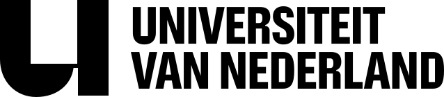

Het UvNL-beeldmerk is de U — kort voor Universiteit. Gebruik bij voorkeur de staande variant in Varsity Green op Paper. Op donkere of drukke achtergronden gebruik je de Paper-versie. Geef het logo altijd ademruimte: minimaal de hoogte van de U als marge rondom.

Varsity Green logo op Paper of wit, met ruime marge.
Paper-versie op Varsity Green of een rustige foto.
Niet roteren, vervormen of op een schreeuwende accentkleur plaatsen.
Geen transparantie, geen grijswaarden, geen druk fotofragment eronder.